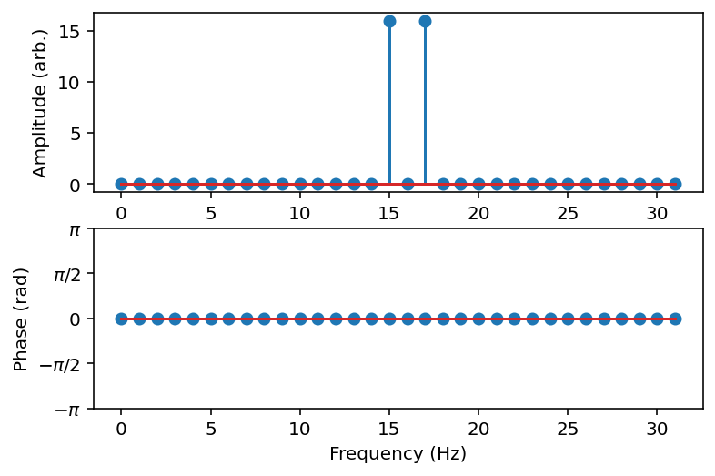

0. 正誤表（PDFファイル）
正誤情報は2023年1月13日に更新しました。1. 目次情報－書籍版との差分を確認する（PDFファイル）
次項「2. 書籍における各章のPythonコードを取得する」で取得できるColabノートブックには，以下が含まれています。- 書籍に掲載されているPythonコード（免責事項参照）
- 書籍には掲載されていないコンテンツのテキスト及びPythonコード
免責事項：
- Colabノートブックの「テキスト」については，基本的に書籍の「本文」は掲載していません。また，一部はWeb資料のために加筆してあります。
- Pythonコードについては，随時バグ修正を行っているため，書籍と完全に合致しないことをご容赦ください。
2. 書籍における各章のPythonコードを取得する（Google Colabノートブック）
第1章 演習環境の立上げ（必ずご覧ください。演習に必要なファイル一式の取得方法が書かれています。）第2章 音に触れる
第3章 アナログ音の周波数分析
第4章 ディジタル音の周波数分析
第5章 音のフィルタリング
第6章 様々な音響信号処理
第7章 音声信号処理の基礎
第8章 逆フィルタ処理
3. 確認課題・演習課題の略解を取得する（Google Colabノートブック）
第1章 演習環境の立上げ(演習問題なし)第2章 音に触れる
第3章 アナログ音の周波数分析
第4章 ディジタル音の周波数分析
第5章 音のフィルタリング
第6章 様々な音響信号処理
第7章 音声信号処理の基礎
第8章 逆フィルタ処理
4. 書籍版における各処理で出力された音を聞く（Webブラウザを利用した音の再生）
第1章 演習環境の立上げ第2章 音に触れる
第3章 アナログ音の周波数分析
第4章 ディジタル音の周波数分析
第5章 音のフィルタリング（サンプル音の継続時間が書籍より短い）
第6章 様々な音響信号処理（サンプル音の継続時間が書籍より短い）
本テキストを用いた授業の受講生による作品
山梨大学大学院医工農学総合教育部工学専攻コンピュータ理工コースにおける開講科目「ディジタル音声処理特論」では，レポート課題3として「自分でテキスト1節分に相当する解説文＋例題コードを作成する」を課しています。受講生の皆さんから「渾身の作」が提出されましたが，そのうち「公開を拒否しない（さすがに匿名化しました）」＋「HTML化したときにサイズが大きすぎない」ものをご紹介します。なお，コードの正確性／洗練さより，興味をもったことの面白さを重視してアップしました。2022年度受講生
1. NMFによる音源分離2. 音声合成ライブラリ WORLDを用いた音質変換
2023年度受講生
1. エフェクタの実装（再生時の音量にご注意ください）2. フォルマントの編集による母音の変化
オマケ：本ページのタイトル画像（Output 4.3 において標本化周波数32 Hzで周波数 15 Hz の cos波を標本化した波形とスペクトル）
